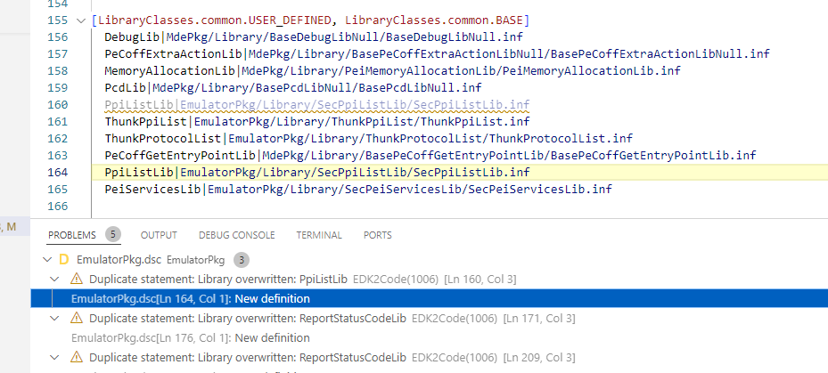
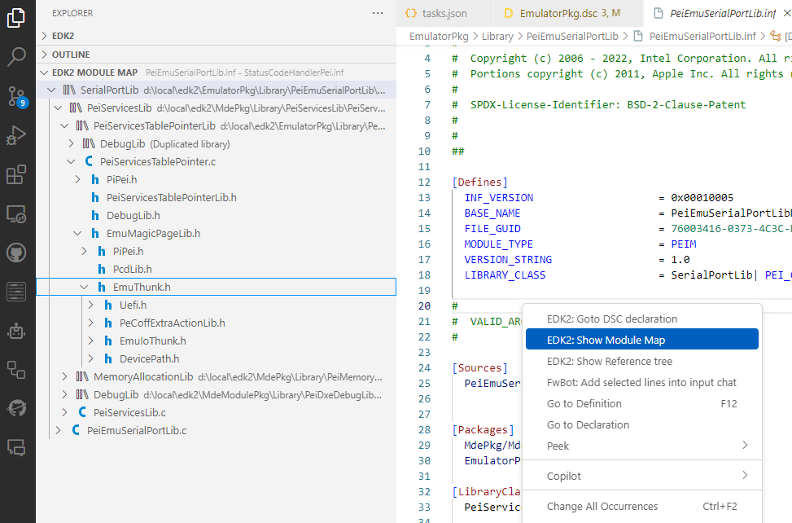
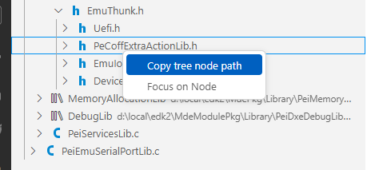

1.0.9
DSC analisys
Shows problems in DSC files

Module map
Added context menu action Show Module Map. This action is available on INF files and will open EDK2 module map side panel to show:
- Library tree
- Source files tree (including Header files)

You can also copy the path of the element selected in EDK2 module map using mouse context menu.
